Base Roll: Users Guide: 
| ||
|---|---|---|
| Prev | Chapter 2. Installing a Rocks Cluster | Next |
This section describes how to install your Rocks cluster frontend.
 | The minimum requirement to bring up a frontend is to have the following rolls:
The Core Meta Roll CD can be substituted for the individual Base and Web-Server Rolls. Additionally, the official Red Hat Enterprise Linux 5 update 1 CDs can be substituted for the OS Rolls. Also, any true rebuild of RHEL 5 update 1 can be used -- distributions known to work are: CentOS 5 update 1 and Scientific Linux 5 update 1. If you substitute the OS Rolls with one of the above distributions, you must supply all the CDs from the distribution (which usually is 6 or 7 CDs). |
Insert the Kernel/Boot Roll CD into your frontend machine and reset the frontend machine.
 | For the remainder of this section, we'll use the example of installing a bare-bones frontend, that is, we'll be using using the Kernel/Boot Roll, Core Roll, OS - Disk 1 Roll and the OS - Disk 2 Roll. |
After the frontend boots off the CD, you will see:
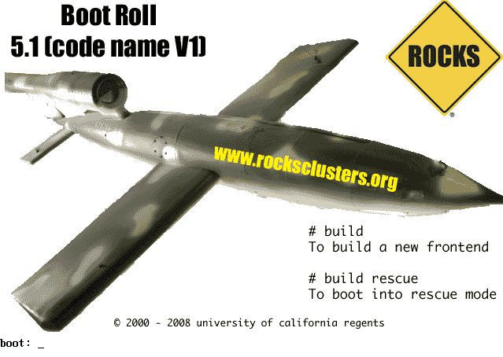
When you see the screen above, type:
build |
| The "boot:" prompt arrives and departs the screen quickly. It is easy to miss. If you do miss it, the node will assume it is a compute appliance, and the frontend installation will fail and you will have to restart the installation (by rebooting the node). |
If the installation fails, very often you will see a screen that complains of a missing /tmp/ks.cfg kickstart file. To get more information about the failure, access the kickstart and system log by pressing Ctrl-Alt-F3 and Ctrl-Alt-F4 respectively. |
After you type frontend, the installer will start running.
| All screens in this step may not appear during your installation. You will only see these screens if there is not a DHCP server on your public network that answers the frontend's DHCP request. |
If you see the screen below:
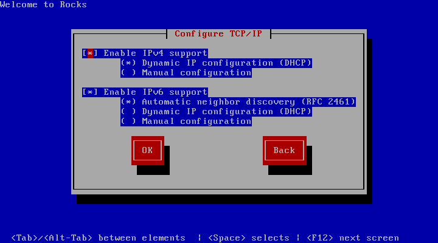
You'll want to: 1) enable IPv4 support, 2) select manual configuration for the IPv4 support (no DHCP) and, 3) disable IPv6 support. The screen should look like:
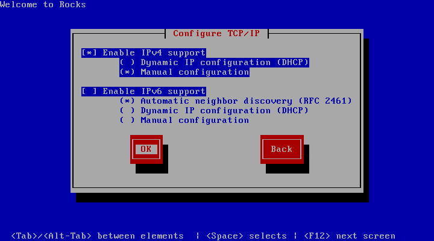
After your screen looks like the above, hit "OK". Then you'll see the "Manual TCP/IP Configuration" screen:
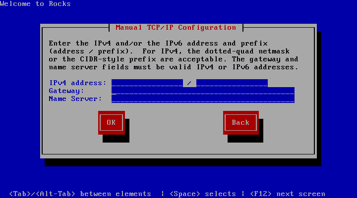
In this screen, enter the public IP configuration. Here's an example of the public IP info we entered for one our frontends:
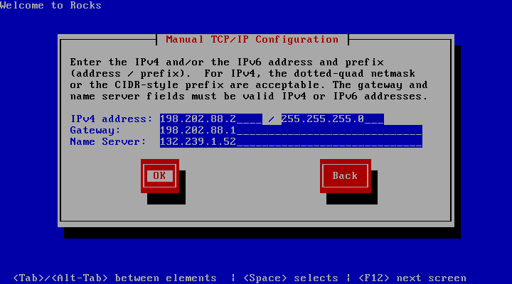
After you fill in the public IP info, hit "OK".
Soon, you'll see a screen that looks like:

From this screen, you'll select your rolls.
In this procedure, we'll only be using CD media, so we'll only be clicking on the 'CD/DVD-based Roll' button.
Click the 'CD/DVD-based Roll' button.
The CD will eject and you will see this screen:
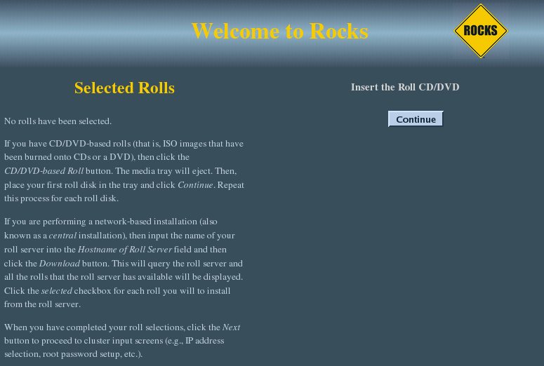
Put your first roll in the CD tray (for the first roll, since the Kernel/Boot Roll is already in the tray, simply push the tray back in).
Click the 'Continue' button.
The Kernel/Boot Roll will be discovered and display the screen:
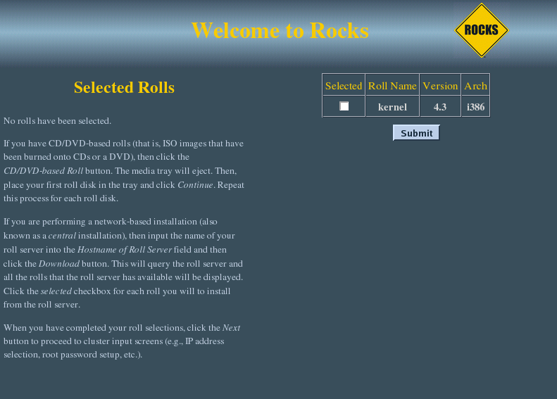
Select the Kernel/Boot Roll by checking the 'Selected' box and clicking the 'Submit' button.
This screen shows you have properly selected the Kernel/Boot Roll.
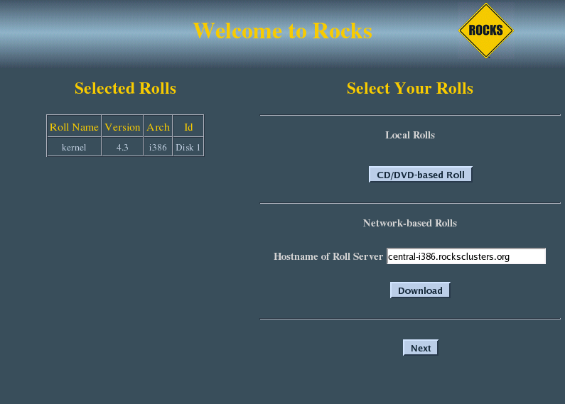
Repeat steps 3-5 for the Base Roll, Web Server Roll and the OS rolls.
When you have selected all the rolls associated with a bare-bones frontend, the screen should look like:
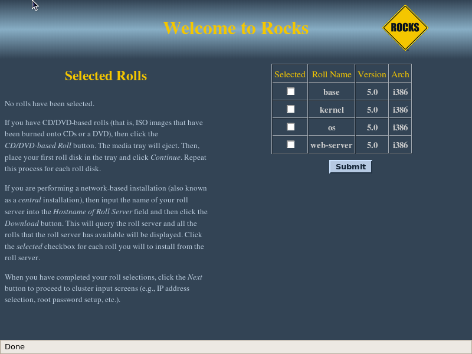
When you are done with roll selection, click the 'Next' button.
Then you'll see the Cluster Information screen:
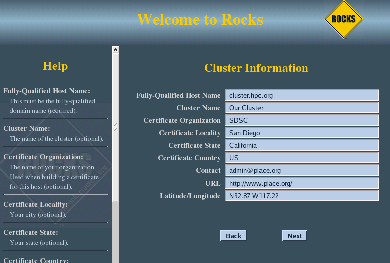
| The one important field in this screen is the Fully-Qualified Host Name (all other fields are optional). Choose your hostname carefully. The hostname is written to dozens of files on both the frontend and compute nodes. If the hostname is changed after the frontend is installed, several cluster services will no longer be able to find the frontend machine. Some of these services include: SGE, Globus, NFS, AutoFS, and Apache. If you plan on adding the Grid Roll (or other Globus PKI services) the hostname must be the primary FQDN for your host. |
Fill out the form, then click the 'Next' button.
The private cluster network configuration screen allows you to set up the networking parameters for the ethernet network that connects the frontend to the compute nodes.
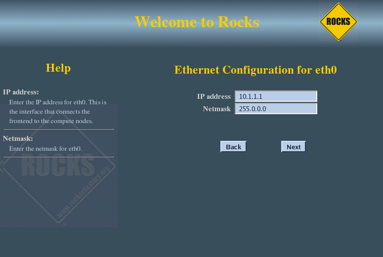
| It is recommended that you accept the defaults (by clicking the 'Next' button). But for those who have unique circumstances that requires different values for the internal ethernet connection, we have exposed the network configuration parameters. |
The public cluster network configuration screen allows you to set up the networking parameters for the ethernet network that connects the frontend to the outside network (e.g., the internet).
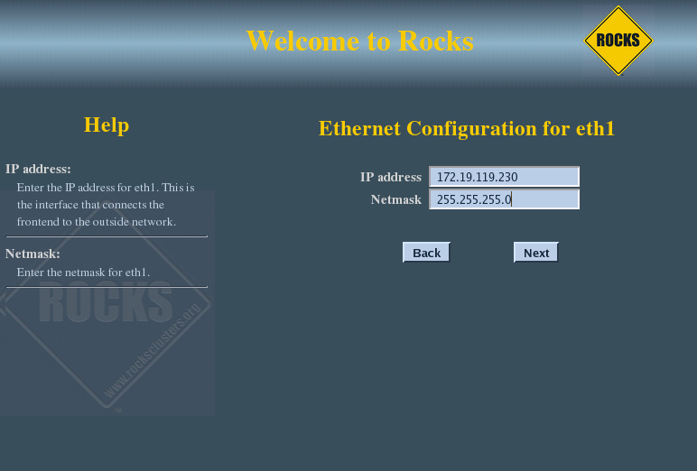
The above window is an example of how we configured the external network on one of our frontend machines.
Configure the the Gateway and DNS entries:
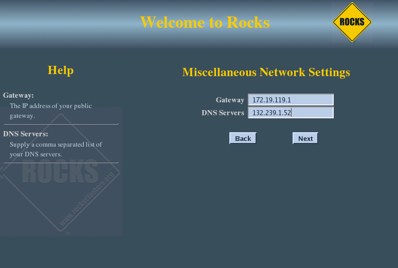
Input the root password:
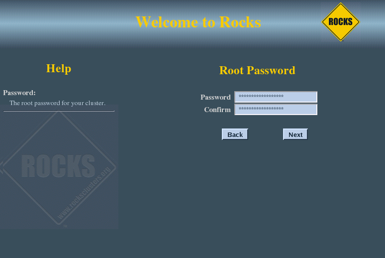
Configure the time:
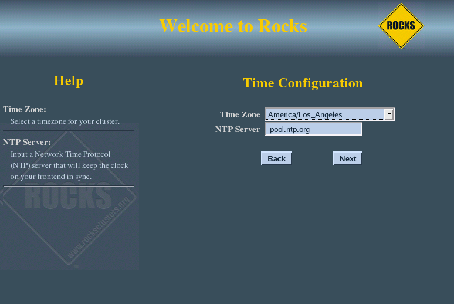
The disk partitioning screen allows you to select automatic or manual partitioning.
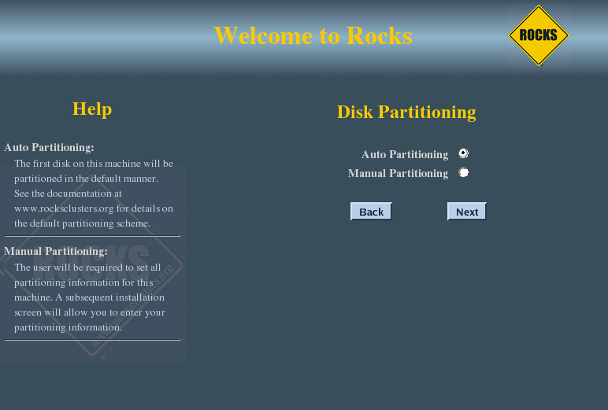
To select automatic partitioning, click the Auto Partitioning radio button. This will repartition and reformat the first discovered hard drive that is connected to the frontend. All other drives connected to the frontend will be left untouched.
The first discovered drive will be partitioned like:
Table 2-1. Frontend -- Default Root Disk Partition
| Partition Name | Size |
|---|---|
| / | 16 GB |
| /var | 4 GB |
| swap | 1 GB |
| /export (symbolically linked to /state/partition1) | remainder of root disk |
| When you use automatic partitioning, the installer will repartition and reformat the first hard drive that the installer discovers. All previous data on this drive will be erased. All other drives will be left untouched. The drive discovery process uses the output of cat /proc/partitions to get the list of drives. For example, if the node has an IDE drive (e.g., "hda") and a SCSI drive (e.g., "sda"), generally the IDE drive is the first drive discovered. But, there are instances when a drive you don't expect is the first discovered drive (we've seen this with certain fibre channel connected drives). If you are unsure on how the drives will be discovered in a multi-disk frontend, then use manual partitioning. |
If you selected manual partitioning, then you will now see Red Hat's manual partitioning screen:
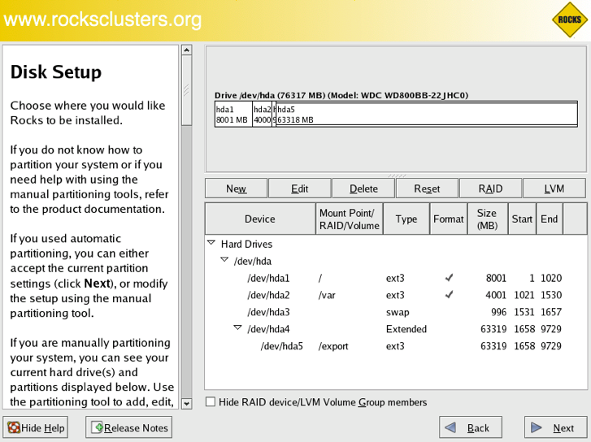
Above is an example of creating a '/', '/var', swap and '/export' partitions.
| If you select manual partitioning, you must specify at least 16 GBs for the root partition and you must create a separate /export partition. |
| LVM is not supported by Rocks. |
When you finish describing your partitions, click the 'Next' button.
The frontend will format its file systems, then it will ask for each of the roll CDs you added at the beginning of the frontend installation.
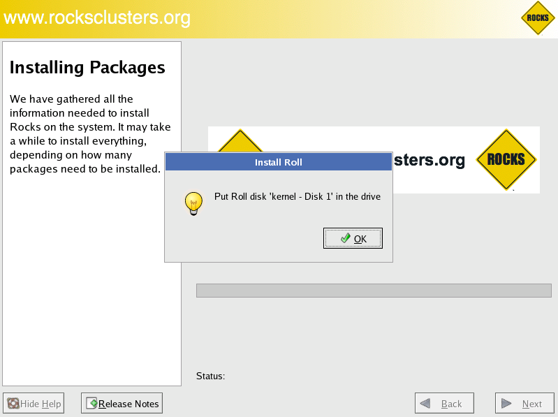
In the example screen above, insert the Kernel/Boot Roll into the CD tray and click 'OK'.
The contents of the CD will now be copied to the frontend's hard disk.
Repeat this step for each roll you supplied in steps 3-5.
| After all the Rolls are copied, no more user interaction is required. |
After the last roll CD is copied, the packages will be installed:
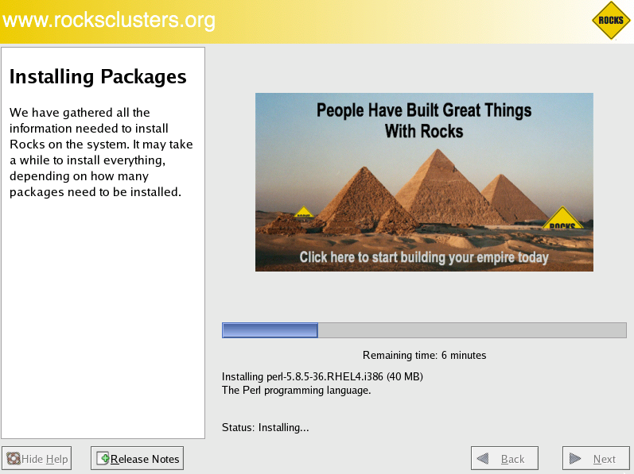
Finally, the boot loader will be installed and post configuration scripts will be run in the background. When they complete, the frontend will reboot.